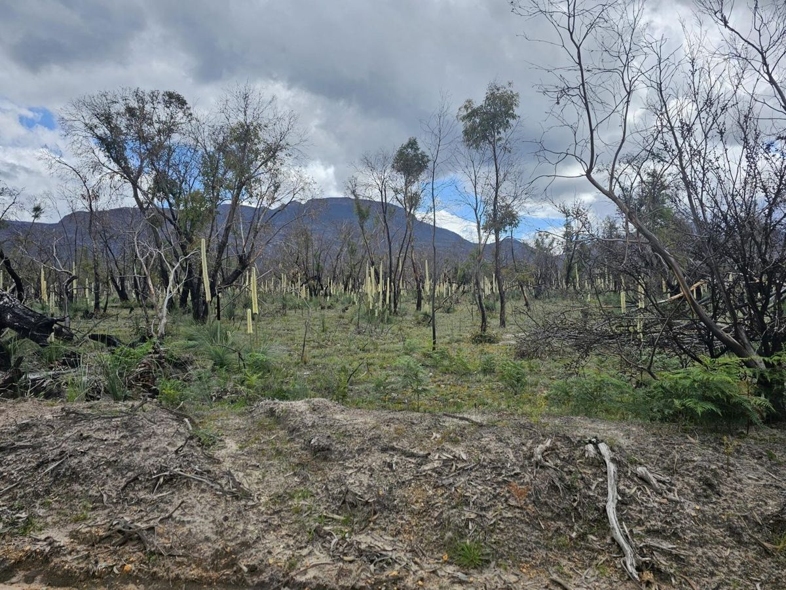

Start here
If fire has just been through your place, we’re sorry. Losing bush you’ve known for years, whether you planted it or spent years walking through it, is a real loss. We know your first priorities will be the urgent things like fences to fix, stock to sort out and insurance forms to fill in. But we also know that many landholders care deeply about the wildlife and plants that share their place, and want to know how to help them recover.
Most of the bush in this part of Victoria has been burning and coming back for a very long time, and much of what looks dead right now is already getting ready to regrow. To know where our interventions can be most helpful, we need to understand what a natural fire recovery looks like in our highly fire-adapted landscape, and where this natural recovery can get off track.
That is what this guide aims to do: help you identify where you can most help your bush recover.

The five questions
The guide is built around the most common questions people have asked us after the 2024 and 2025 bushfires:
- Was this a ‘good fire’ or a ‘bad fire’ for my block? What sort of country is this, and how does it respond to fire? (Part 1)
- What plants come back by themselves? What will recover without me, and how long will it take? (Part 2)
- What animals survived? How do I find out what’s still here? (Part 3)
- What should I actually do? Weeds, pests, hollows, thinning, replanting — and in what order. (Part 4)
- So what do I do first? (Part 5)
This guide is also designed for folks who are caring for bushland that has not been recently burnt. Just like the fire plan you have developed ahead of time for your family and house, you can prepare a biodiversity-focused fire plan before a fire occurs. To learn how to collect information that will help you make the best decisions possible after a future fire, start at Part 6. It is short, and everything in it is worth more done now than after the event.
What this guide doesn’t cover
This is about native bush on your place, not the garden around your house. For defendable space, plant flammability, firewise garden design and what to put near the buildings, see resources such as the CFA’s Landscaping for Bushfire guide or the Pyrenees Firewise Garden Guide, which Project Platypus wrote with Pyrenees Shire Council in 2026.
We also don’t cover:
- Fire management — planned burning, permits, fuel reduction. Talk to your local CFA for information about planned burns on your property.
- Hazard trees and what you are permitted to clear. Burnt trees near buildings, tracks and fencelines are a safety and regulatory question rather than a habitat one, and the rules vary with your zoning. Ask your council or a local arborist. We do ask you to keep standing dead trees where they can safely be kept, to preserve habitat (4.5), but safety comes first.
- Agricultural recovery — fencing, stock, pasture and soils. Talk to your local CMA or Agriculture Victoria.
Confirm the exact title, publication year and a public link for the Firewise guide and the CFA’s Landscaping for Bushfire guide, and check whether DEECA Recovery Coordination needs to approve this guide as a public DRFA-funded output before release.